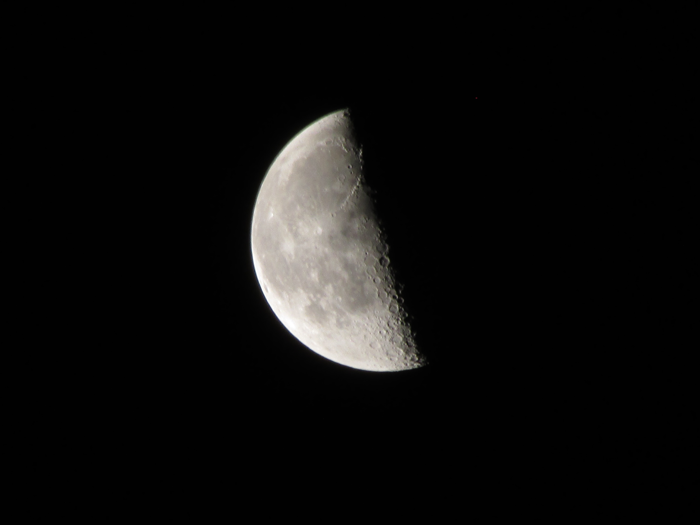

moon and crators

This is one of the biggest reasons i have a zoom lensa(55-200). Although i take photos of the moon whenever i get a chance, this is the clearest photo I've ever gotten. I'd still like to improve though. I experiment with the settings every time. I thought a smaller aperture might help, but not from what i can see. I believe this was taken on f8. I still love how this photo turned out though.